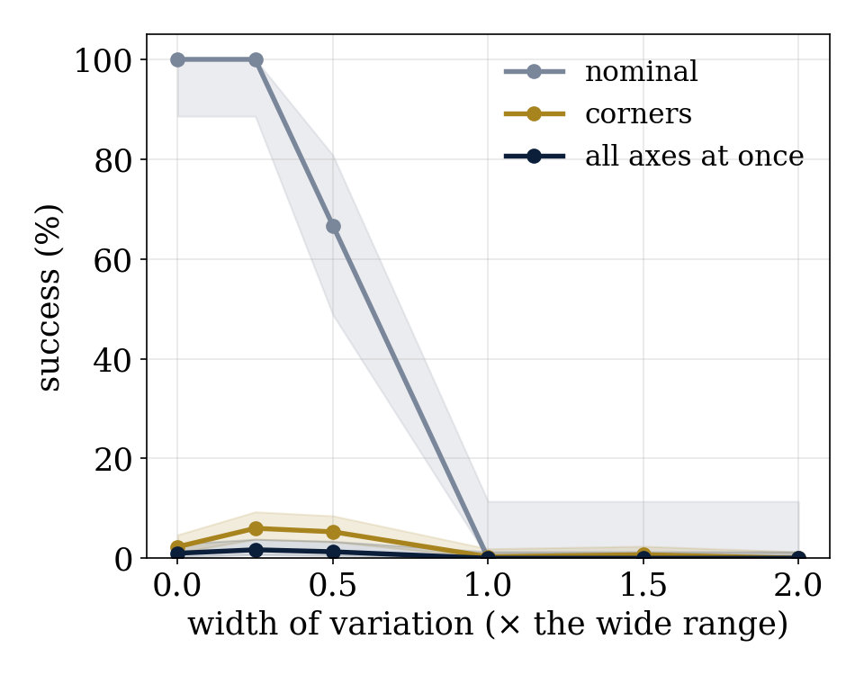
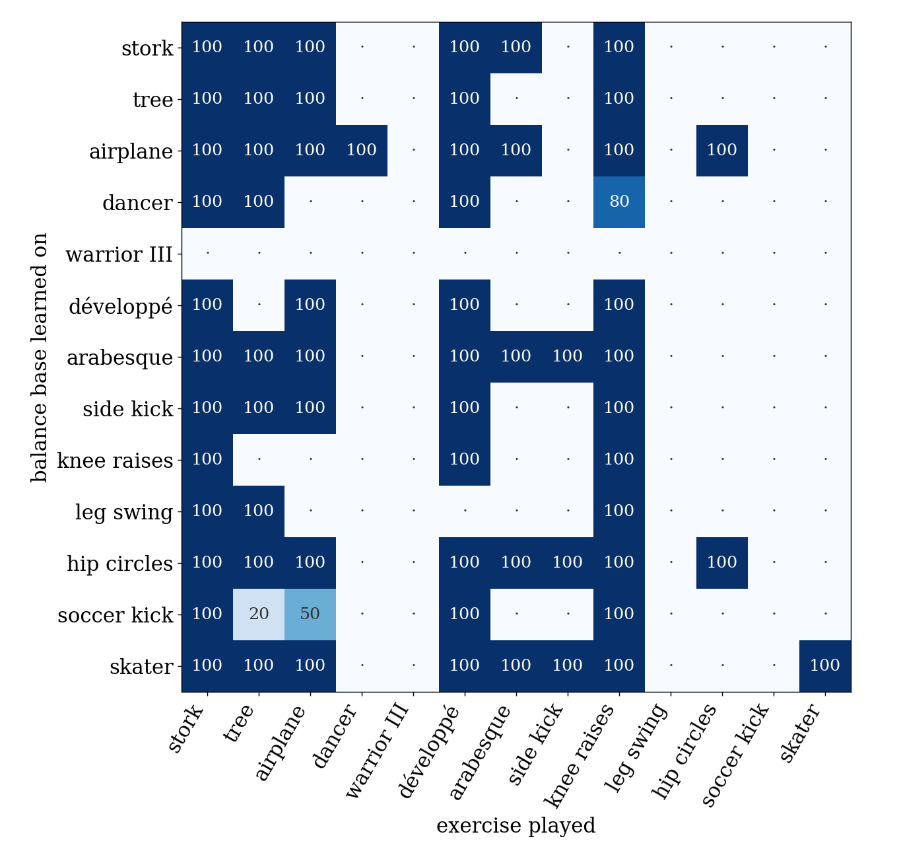
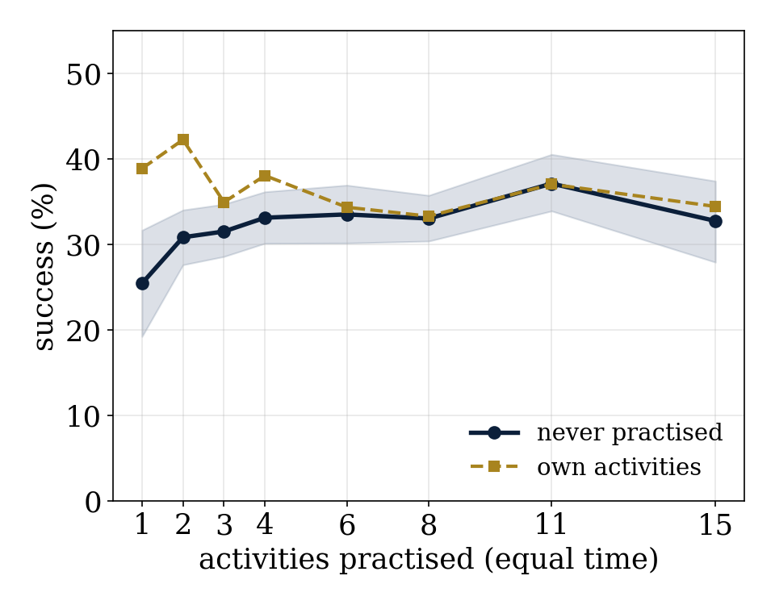
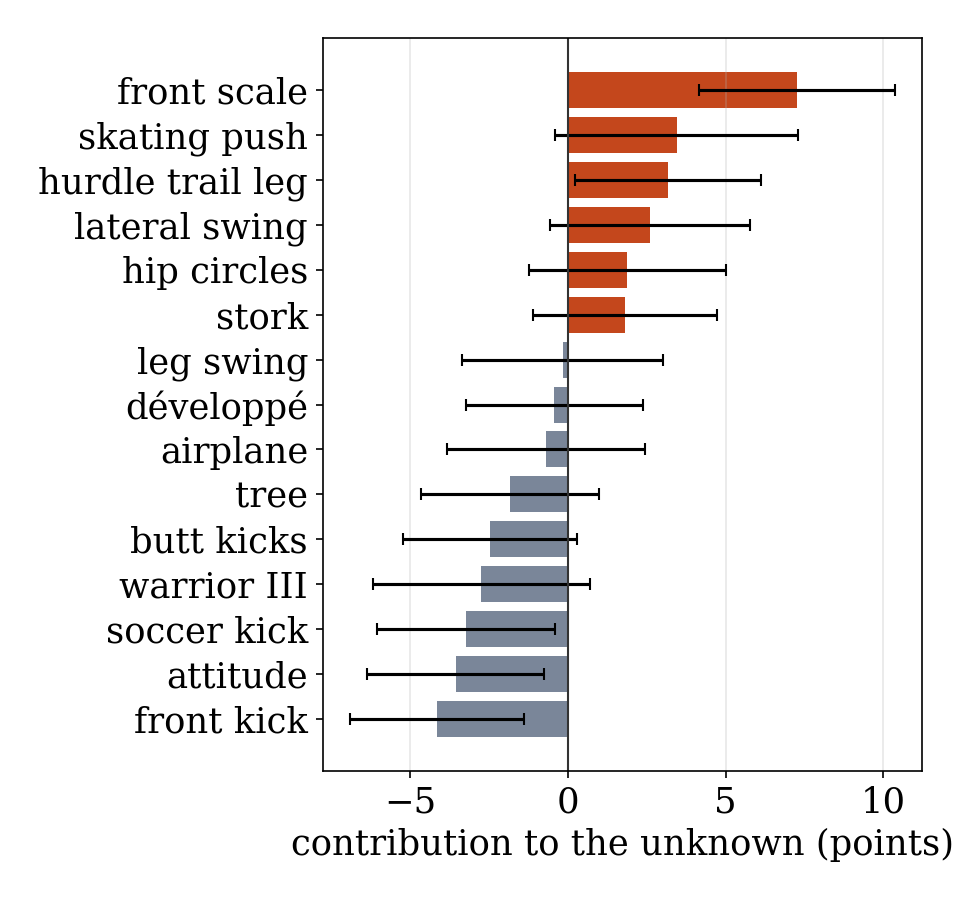

Yoan Maisonneuve
Navitek Robolabs, Montréal, Québec
Preprint, 13 November 2026. All results are from simulation (MuJoCo). Code, data and laboratory notebooks are openly available.
"Variance of experience" can mean two different things for a learning robot: varying the conditions under which it practises one skill (domain randomisation), or varying the activities it practises before specialising, as in the Norwegian model of physical education, where children sample many sports before specialising. We tested both on a simulated 1.5 m humanoid with small controllers tuned by CMA-ES, with pre-registered hypotheses. Varying conditions did not help a 19-parameter gait to walk when all difficulties occur together (0 to 2% success across four regimes, 48 trainings, 360 unseen conditions); stacking all difficulties at once even taught the learner to stop walking, and an automatic curriculum never widened. Variety that stays learnable helped: a generalist trained on five difficulties one at a time beat five specialists with the same experience (78% vs 67%). Varying activities transferred: across 13 one-leg exercises from seven disciplines, hard exercises taught the easy ones but not the reverse, some exercises impossible to learn alone became possible with a balance learned elsewhere, and a multisport "childhood" left the robot the most ready for unseen activities (7.7 s held before any practice, versus 4.7 s for a single-sport childhood and 0 without). In 1,000 randomised curricula of 1 to 15 activities with equal practice time, success on five never-practised activities rose with the number of activities practised (25% with one, 37% with eleven; Spearman ρ = 0.10, p = 0.001), with quickly diminishing returns; which activities were practised mattered as much as how many: a gymnastics front scale taught the most (+7.2 points), while a karate front kick, a ballet attitude and a soccer kick cost 3.2 to 4.2 points each. Variety made the robot slightly worse at each practised activity (39% → 33%) and better at the unknown.
« La variance des expériences » peut vouloir dire varier les conditions d'un même geste, ou varier les activités avant de se spécialiser (le modèle norvégien de l'éducation physique). Sur un humanoïde simulé de 1,5 m, la première n'a pas aidé une petite marche à tenir quand toutes les difficultés arrivent ensemble, et l'a même fait renoncer à marcher ; une variété apprenable, une difficulté à la fois, a aidé. La seconde se transfère : les exercices difficiles apprennent les faciles, un exercice impossible seul devient possible grâce à un autre, et une enfance multisport rend le plus prêt devant l'inconnu. Sur mille essais à temps de pratique égal, la réussite sur l'inconnu monte avec le nombre d'activités pratiquées (de 25 % à 37 %), avec des rendements qui baissent vite ; le choix compte autant que le nombre : la balance avant de gymnastique apprend le plus, d'autres activités coûtent.
The question came from a conversation about where intelligence comes from: "the variance of experience gives da Vinci's intelligence; let us test the hypothesis on the robot." We first understood variance as the variability of conditions in which a skill is practised, the idea behind domain randomisation [1, 2] and automatic domain randomisation [3], and built a bench around it. The author then corrected us: what he meant was the variety of activities, yoga, soccer, athletics, skating, gymnastics, all kinds of dance and their warm-ups, as in the Norwegian approach to children's sport, where early specialisation is avoided; the sport-science literature describes the same idea as the "sampling years" that precede specialisation [4, 5]. We report both, because the contrast is the finding.
All experiments were run as a laboratory notebook: hypotheses, thresholds and credences were committed before each run and verdicts after; refutations and mistakes are reported. The robot is simulated in MuJoCo [6] and its controllers are tuned with CMA-ES [7].
Robot. N3: 1.5 m, 26.5 kg, 17 position-controlled joints (hip roll and pitch, knee, ankle pitch and roll, shoulders, elbows, neck), hip flexion up to 135°, no hip yaw, no waist, no hands; only the feet touch the floor.
Two controllers. (i) A walking gait with 19 parameters (a rhythmic pattern with attitude feedback, foot placement and cadence adaptation), pre-trained at nominal conditions until it passed the judge in 100% of nominal trials. (ii) A balance base for one-leg activities, with 7 parameters shared by every activity (weight transfer to the stance leg, stance knee, ankle feedback gains on pitch and roll and their rates, torso target); each activity only prescribes its gesture (free leg, torso, arms).
Judges. Walking: 10 s without the torso tilting beyond 40° or the centre of mass dropping below 60%, at least 0.6 m of progress, at most 0.5 m of drift, at most 0.1 s airborne. One-leg activities: hold the gesture 10 s after lifting, without the free foot touching the floor, the torso leaving its target by more than 35°, or the centre of mass dropping below 65%.
A catalogue of 26 physical axes (masses, centre-of-mass offsets, segment lengths, load, asymmetry, torque, gains, damping, joint friction, battery sag, servo resolution, command delay, floor friction, slope, uneven and soft ground, pushes, wind, sensor noise, bias, delay and drop-outs, initial posture, velocity and imbalance, target speed), each with a narrow, wide and extreme range. Four regimes with the same algorithm and budget (6,400 ten-second episodes each, 3 seeds): R0 no variation, R1 narrow, R2 wide, R3 an automatic curriculum that widens an axis when probes at its edge succeed more than 80% of the time. A fixed evaluation set of 360 conditions was drawn and committed before any training.
| regime | nominal | all axes in wide ranges | two axes beyond | three axes at a corner | other solver |
|---|---|---|---|---|---|
| R0 no variation | 100% | 1.0% | 0% | 2.3% | 1.3% |
| R1 narrow | 100% | 1.0% | 0% | 6.3% | 0.7% |
| R2 wide | 0% | 0% | 0% | 0.3% | 0% |
| R3 curriculum | 100% | 1.0% | 2.0% | 6.0% | 0.7% |
No regime learned to walk when all difficulties occur together. Under wide variation (R2) the learner abandoned the task: it stood still (0.04 m of progress in 10 s), falling half as often. A width sweep (0 to 2 times the wide range, Fig. 1) shows the gait survives at 0.25, wavers at 0.5 (one seed of three loses it) and disappears from 1. The curriculum never widened: its mean width drifted down from 0.25 to 0.21. Removing one group of axes at a time from R2 restored walking only when the terrain group (slope, uneven and soft ground) was removed (93% nominal success). Changing the training score so that standing still earns nothing (R-119) did not restore walking either: under stacked variation almost no candidate ever succeeded (0.2 to 0.6% of episodes), so there was nothing to learn from. The only gain of condition variety was modest: three difficulties at a corner, 2.3% → 6%.

Five single conditions that break the pre-trained gait (slope, sensor delay, command delay, soft floor, wind). With the same 4,800 episodes, five specialists (one per condition) were beaten by one generalist trained on the five conditions mixed, one at a time: 67% vs 78% on unseen draws of the same conditions (R-116), and 67% vs 79% when a learned router chose the specialist from two seconds of walking (R-118; the router itself was right 94% of the time). Specialists also forgot: they did worse than the starting gait on conditions they had not practised. Yet learning difficulties one at a time did not compose into robustness when all 25 occur together (0.7%, R-120), and a curriculum adding difficulties one by one climbed to three to five simultaneous difficulties before plateauing (R-121, 0.3% on all at once).
We listed about 120 exercises from 13 disciplines and kept the 13 one-leg exercises N3 can do: yoga (stork, tree, airplane, dancer, warrior III), dance (développé, arabesque), karate (side kick), athletics and warm-ups (knee raises, leg swing, hip circles), soccer (the kick) and skating (the skater's stance). Each was learned alone (8 of 13 reached 10 s in 100% of trials), and each learned balance base was then played on all 13 (Fig. 2).

Three regularities. Hard exercises teach easy ones, not the reverse: the stork, knee raises and développé were held by almost every base (columns 83 to 92%); the skater only by its own. An exercise impossible alone becomes possible through another: the dancer (2 s when learned alone) was held in 100% of trials with the airplane's base; the side kick (0.7 s alone) with the arabesque's, the hip circles' or the skater's. The best teachers come from three disciplines: airplane (yoga), hip circles (warm-up) and skater (skating) each made 58% of the other exercises succeed. Standing strong under pushes (a Eurofit-style battery [9]) did not predict transfer (r = −0.11), and two specialised bases could no longer stand on two feet.
Three regimes with the same budget: MULTI learned the base on five activities from three disciplines (stork, tree, airplane, développé, hip circles), SPÉ on a single one (one per seed), RIEN not at all. Then each specialised for 15 generations on three never-practised activities (skater, knee raises, arabesque). Before any practice, MULTI held 7.7 s on average, SPÉ 4.7 s, RIEN 0.03 s. After specialisation, MULTI and SPÉ both reached 100% (a ceiling), while RIEN reached 79%: without a childhood, the skater was learned by only one seed in three.
The pool held 15 one-leg activities (the exercises above plus seven from athletics, karate, ballet, warm-ups, skating and gymnastics: butt kicks, front kick, hurdle trail leg, attitude, lateral leg swing, skating push, front scale); five others were held out and never practised (skater, knee raises, arabesque, side kick, dancer). Each of 1,000 trials drew a curriculum of k activities at random (k = 1, 2, 3, 4, 6, 8, 11, 15), learned a balance base on it with the same budget (480 episodes), and was judged on the five held-out activities. The night took 5 h 40 on 14 processes.
| k | trials | never practised | own activities | knee raises | arabesque | dancer |
|---|---|---|---|---|---|---|
| 1 | 45 | 25.4% (19.2–31.7) | 38.9% | 72% | 33% | 7% |
| 2 | 155 | 30.8% (27.6–34.0) | 42.3% | 88% | 38% | 12% |
| 3 | 155 | 31.5% (28.6–34.7) | 34.9% | 90% | 39% | 12% |
| 4 | 155 | 33.1% (30.1–36.2) | 38.1% | 93% | 42% | 16% |
| 6 | 155 | 33.5% (30.2–36.9) | 34.4% | 92% | 42% | 13% |
| 8 | 155 | 33.0% (30.4–35.7) | 33.3% | 94% | 47% | 12% |
| 11 | 120 | 37.1% (33.9–40.5) | 37.0% | 95% | 56% | 19% |
| 15 | 60 | 32.8% (27.9–37.4) | 34.4% | 92% | 45% | 18% |

Success on the unknown rose with variety (Spearman ρ = 0.10 over 1,000 trials, p = 0.001): most of the gain came from the first two or three added activities (25% → 31%), then slowly up to 37% at k = 11, and down again at k = 15. The contribution of each activity (success of curricula containing it minus those without it, at equal k) explains the drop: the front scale from gymnastics taught the most (+7.2 points, 95% interval 4.1 to 10.4) and the hurdle trail leg helped (+3.2), whereas the karate front kick (−4.2), the ballet attitude (−3.6) and the soccer kick (−3.2) cost: hard to learn with this budget, they consumed practice without transferring. Practising the whole pool includes all of them. Variety also made each practised activity slightly worse (39% → 33% at k = 8), the trade-off of the multisport model. Transfer was uneven across held-out activities: knee raises (72% → 95%), the arabesque (33% → 56%) and the dancer (7% → 19%) benefited; the skater stayed almost impossible without its own practice (0 to 6%).

Variety helped when each experience remained learnable: one difficulty at a time, or one activity at a time, each within reach. Variety stacked all at once was not learning but noise: the learner quit. For a small controller, activities transferred more than conditions did. This matches the intuition behind sampling many sports before specialising, with the caveat that our "childhood" is a balance base of seven numbers and minutes of computation. Two practical lessons for a physical humanoid follow: practise a handful of varied activities rather than one (the first few bring most of the gain), and choose them: some activities teach balance to the others, some only consume time.
We first tested the wrong meaning of variance; the condition bench is reported because its failure is informative. Two passes of that bench were stopped and archived before any result was interpreted: the starting gait did not pass the judge (fixed by pre-training at nominal), and the initial search step was so large that no candidate passed the nominal (calibrated by a rule written before measuring). A pre-registered tie-breaking rule produced a meaningless verdict on a floor effect; we report it as "to revisit".
Simulation only; one robot; small controllers (19 and 7 parameters); short trainings; one-leg activities only for the activity study; hand-written gestures; ranges chosen by us.
Notebooks R-111, R-116, R-118 to R-121 and R-123 to R-125 (in French), the N3 model, scripts, raw results, the frozen evaluation set and the dated commit history are open at ymiaconseil.com/navitek/recherche/articles/. Code under the MIT licence; texts, figures and data under CC BY 4.0.
Use of AI. The experiments, analysis code and this text were produced with the assistance of Claude (Anthropic), an AI system, working under the author's direction; the author takes responsibility for the content. AI systems are not listed as authors.